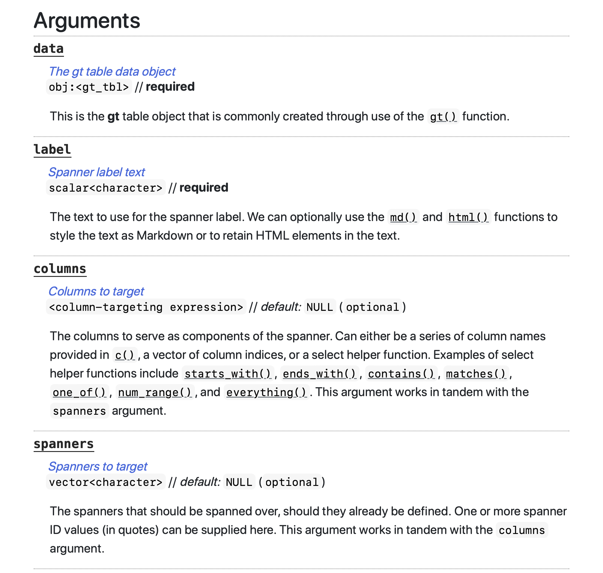
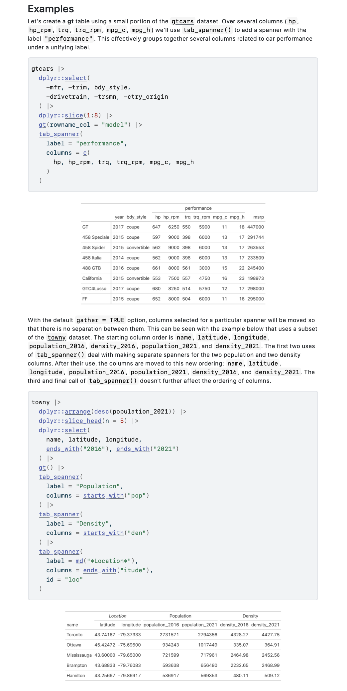
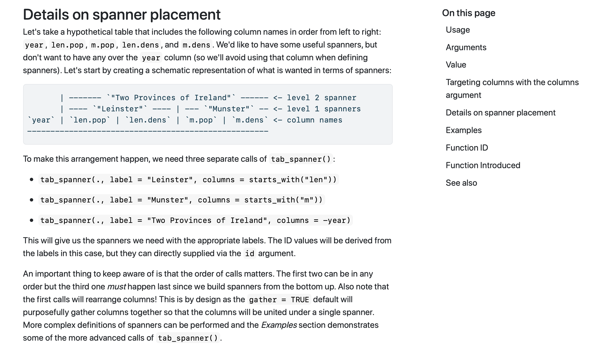

2023-07-27
This is the eighth blog post on gt 0.9.0 and, for this one, we’re going to focus on two seemingly small (but actually really important) things: included datasets and documentation.
0.9.0 and beyondWe really love having varied datasets in the gt package. They allow us to make interesting examples for the documentation (more on this later), and they allow you quickly try out gt features without much fuss. In version 0.9.0, four new datasets were added: towny, metro, rx_adsl, and rx_addv. The first two of these, towny and metro, are being used extensively in our examples; check out the examples for the text_case_match(), fmt_url(), and fmt_image() functions. The rx_adsl and rx_addv datasets have been added by gt contributor Alex Lauer, along with the excellent new article Case Study: Clinical Tables.
The plan going forward is to add even more datasets and work them into new examples. If you install the development version of gt via devtools::install_github("rstudio/gt"), you’ll have access to two datasets that will be in the next CRAN version of gt: constants and illness.
The gt package has a large set of exported functions. After all, it’s trying to help you do a lot when it comes to preparing tables. When an API gets this big, the complexity of the project tends to increase in all sorts of ways. So, it’s all the more important to make the documentation as helpful as possible. The docs should help guide the user to the right information and provide as many useful pointers wherever the user might land.
To get the documentation effort off to a good start (many years ago), we decided to prioritize the following things:
It does take time to develop useful function documentation, especially when there are over 125 exported functions. However, with gt 0.9.0, we feel like it’s really coming together. We’ve actually done a few more things lately with the overall aim of refining the documentation experience, so let’s have a look at these new documentation features.
We wanted to have some consistency when explaining the arguments for each function. To achieve this, we structured the documentation entry for each argument such that there is:
Here is a screenshot of some of the arguments for the tab_spanner() function (taken from the project website page for tab_spanner()).

Having a short title for each argument is useful. The short title can more directly describe the purpose of the argument than the argument name (which is often terse) can by itself. It’s really great as a ‘subject line’ for the descriptive text that follows, and it should remove some ambiguity within the more complex functions where there is a lot of interplay across arguments.
Knowing what kinds of inputs are okay for each argument is also very good upfront information! Sometimes you have to carefully parse the description for hints on this sort of thing. This small change, which occupies the next line of text, means that we can, for the most part, rely on something like scalar<character> to indicate that a single string is needed. And we can always elaborate on acceptable inputs within the argument description that follows if the situation demands it.
We know from the revised function documentation for tab_spanner() that the data and label arguments require inputs, as the required label makes this quite clear. This at-a-glance information doesn’t require the user to have to look at the function’s signature in the Usage section. We hope this little change is useful for quickly attaining an understanding of the requirements for the different functions.
We kept adding more examples in gt 0.9.0, and we’ll keep trending toward the direction of ‘more is better’. Many functions have two (useful) examples, but we’d really like to have even more, especially for those functions that can produce many different types of outputs. The documentation for the tab_spanner() function now has six examples available (an excerpt from the project website is below), which is more in line with the standard we want to have for every function.

This means there will be hundreds of examples you can draw from when making your own tables. This benefits all users since many great table-making ideas can be gleaned from these mini-galleries of gt tables.
As it sometimes happens, key pieces of information within a documentation page might be explained elsewhere (e.g., in another section or in an entirely different resource). While this is not the worst thing in the world, it would often be more convenient to just have all the necessary information on a single page. In gt 0.9.0, effort was put into adding necessary sections to each function’s documentation page. Sometimes this work involved placing a section on referencing table columns in all the functions where that was relevant, and sometimes we created new sections to more fully explain complex concepts (like adding column spanners with the tab_spanner() function).

Not having to jump around in the documentation can only be a good thing, and it’s hoped that these focused documentation changes make learning gt’s functions a smoother experience!
The gt package has been improving in a documentation-and-datasets sort of direction. We don’t want you to be confused, so good docs are a must for this package. You can always suggest improvements in these areas by filing an issue on GitHub. Take part in the gt Discussions page if you have any suggestions or questions. The gt package has a Twitter account at @gt_package, so check it out for package news and announcements. The gt_package Discord server is also a great place to more casually ask questions and generally talk about table things.